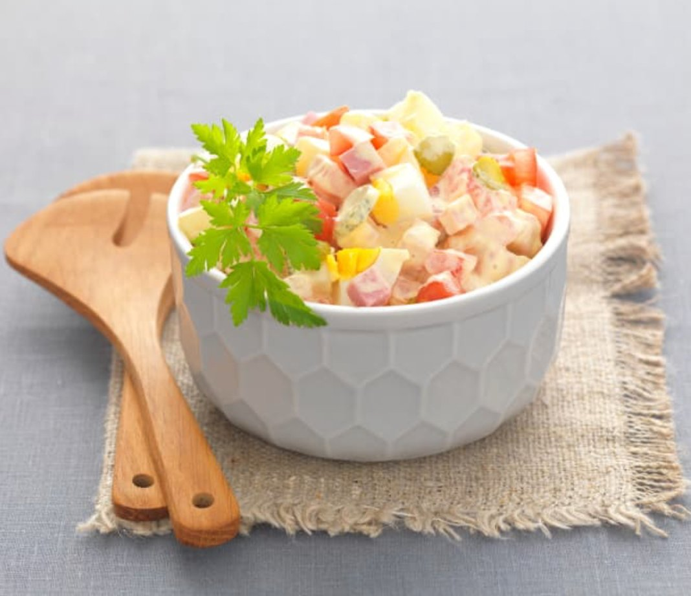

Salade piémontaise
Ingredients
4×
- eau
- 400 g de pommes de terre
- sel
- 440 g de tomates
- 200 g de dés de jambon
- 6 cornichons
- 100 g de mayonnaise

Préparation
Étape 1
Mettre de l’eau dans le bol. Mettre 400 g de pommes de terre en dés dans le Varoma avec du sel. Cuire à la vapeur 20 min/Varoma/vitesse spatule.
Étape 2
Pendant ce temps, mettre dans un saladier 440 g de tomates en dés, 200 g de dés de jambon et 6 cornichons en rondelles.
Étape 3
Laisser refroidir les pommes de terre, puis les ajouter avec 100 g de mayonnaise. Mélanger.